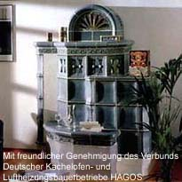
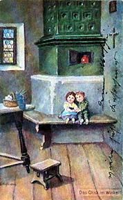
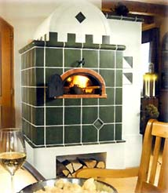

| Geschichte des Kachelofenbaus
Kachelöfen haben Tradition
 Von
den offenen Feuerstellen der Urzeit abgesehen, dürfte der Kachelofen
das älteste Heizgerät sein. Der Wärmespender mit
der längsten Tradition ist er sicherlich. Von
den offenen Feuerstellen der Urzeit abgesehen, dürfte der Kachelofen
das älteste Heizgerät sein. Der Wärmespender mit
der längsten Tradition ist er sicherlich.
Als Vorläufer des heutigen Kachelofens kann man den Pfahlbauofen
aus der Bronzezeit um 2500 v. Chr. ansehen. Bei dieser im Alpengebiet
und im süddeutschen Alpenvorland entstandenen Urform des Kachelofens
handelte es sich um Feuerstätten, die aus Steinen und Lehm
aufgebaut waren. Die Steine hatten damals bereits die Aufgabe, die
Wärme zu speichern.
Die weitere Entwicklung des Kachelofens erfolgte ebenfalls im Alpenraum.
In den weichen Lehm des Ofenmaterials wurden aus Ton gefertigte
Töpfe eingedrückt, um damit die Wärme abstrahlende
Oberfläche zu vergrößern.
Der
eigentliche Kachelofen, dessen Ummantelung ausschließlich
aus Kacheln besteht, war erst möglich, als es den Töpfern
gelang, aus den runden keramischen Schüsseln quadratische Kacheln
mit angeformten Rändern (Rümpfen) zu fertigen. Diese Entwicklung
geht auf das 14. Jahrhundert zurück. Der Kachelofen machte
dann in seiner äußeren Gestaltung alle Baustile mit,
von der Gotik, Renaissance, Barock, Rokoko, Klassizismus, Biedermeier
über die Gründerzeit und den sich daran anschließenden
Jugendstil bis in unsere Tage. Eine Blütezeit für die
Kunst des Kachelofens war das 16. und 17. Jahrhundert.
Der
wahrscheinlich älteste Kachelofen einer auch heute noch üblichen
Bauart dürfte in der Landesfürstlichen Residenz in Meran
zu finden sein. Er stammt aus dem 15. Jahrhundert.
Kunsthistoriker meinen, daß auch die alten Römer an
der Entwicklung des Kachelofens mitgewirkt haben. Zumindest weist
das Wort "caccabus" darauf hin. Ein Caccabus war ein einseitig
offener Hohlzylinder. Man reihte sie aneinander und erstellte damit
Gewölbe für Brenn- und sonstige öfen. Aus "caccabus"
dürfte sich das Wort "Kachel" gebildet haben.
Die Entwicklung des Kachelofens führte in logischer Konsequenz
von den einzeln eingedrückten Kacheln zum Kachelmantel. Dabei
erkannten die Menschen recht schnell, daß diese vom Hafner
gefertigten Kacheln eine Möglichkeit zur künstlerischen
Gestaltung boten. Nicht nur Fürsten, auch einfache Bauern ließen
sich ihren Kachelofen "maßschneidern".
 Heute
lassen sich ganze Stilepochen an den vielen noch erhaltenen Kachelöfen
der vergangenen Jahrhunderte nachweisen. Heute
lassen sich ganze Stilepochen an den vielen noch erhaltenen Kachelöfen
der vergangenen Jahrhunderte nachweisen.
Neben der Anpassung der äußeren Gestaltung hat man es
aber auch verstanden, den Kachelofen in diesen Epochen auch technisch
weiterzuentwickeln. Kachelöfen sind deshalb überliefert
und modern zugleich: überliefert, weil sie im wesentlichen
nach alten und bewährten Regeln gebaut werden; modern, weil
sie praktisch alle heute vorkommenden Energiearten und eine Vielzahl
von Heiztechniken ausnutzen können.
Sie
können heute unter vielen Bauarten wie z. B. Grundkachelöfen,
Holzbrandkachelöfen, Warmluftkachelöfen, Warmluftkachelöfen
mit nachgeschalteten keramischen Heizgaszügen oder mit Warmwasserheizungsteil,
mit Backraum etc. wählen, ganz nach den persönlichen Vorstellungen
und Bedürfnissen.
Artikel mit freundlicher Genehmigung des Verbunds
Deutscher Kachelofen- und Luftheizungsbauerbetriebe HAGOS eG in
70505 Stuttgart,
Postfach 80 05 60, Fax: (07 11) 7 88 05 - 49, http://www.hagos.de/.
Weitere Artikel
|